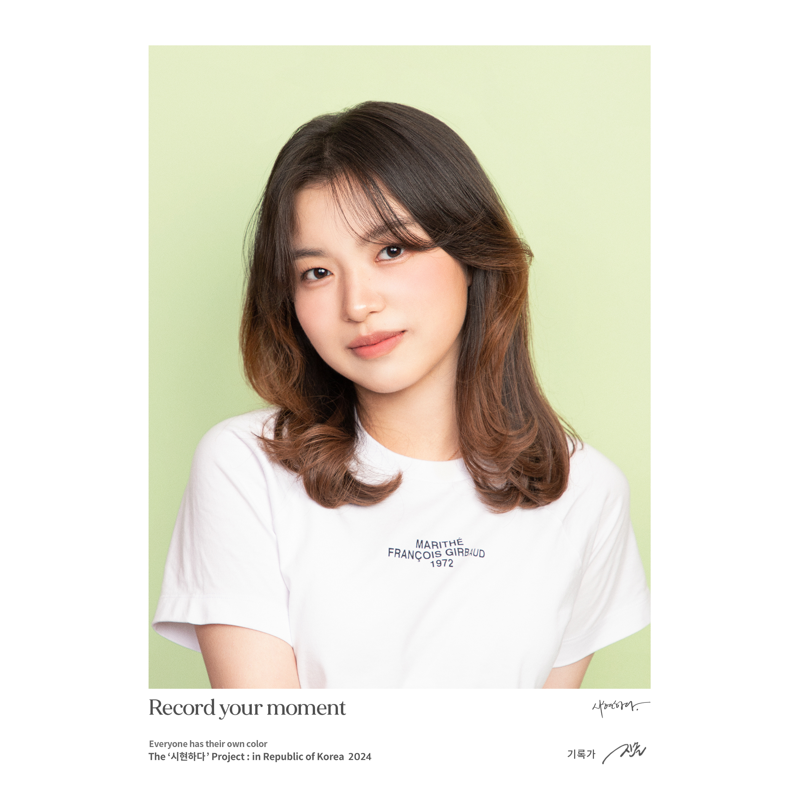

About Me
I’m Judy (Tzu-Ning Chao), a Communication major (CAE) with a Business minor at The Ohio State University. I bridge media, storytelling, and operations with a focus on photography, journalism, and entertainment industry workflows.
4+
Years Photography
3
Disciplines (Media/Comms/Business)
Bilingual
Chinese/English